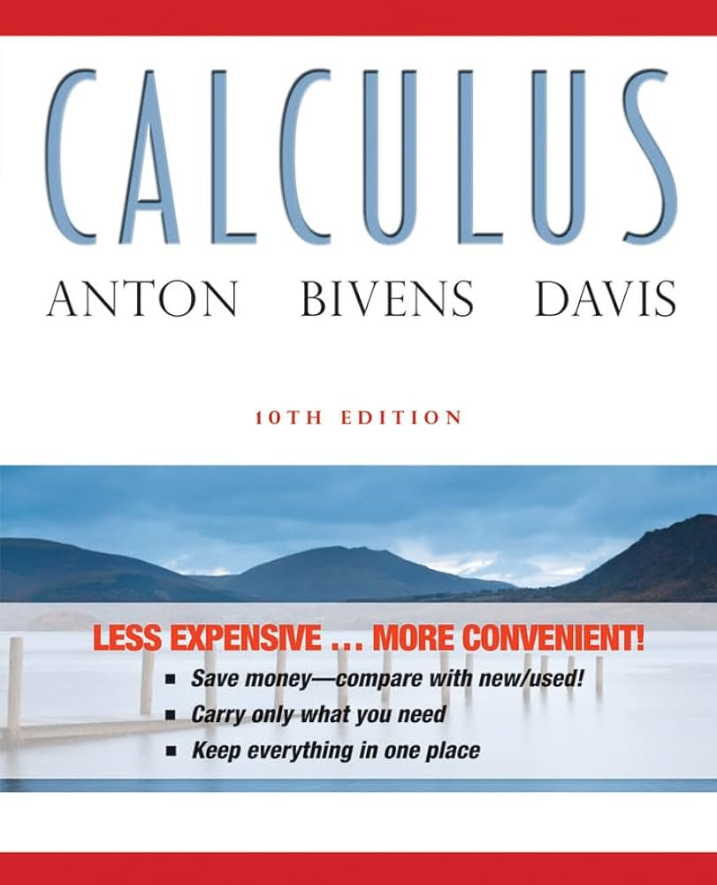
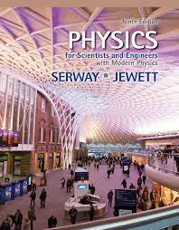
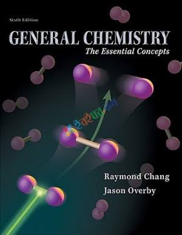
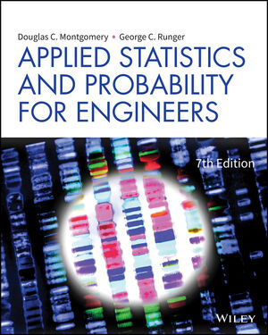
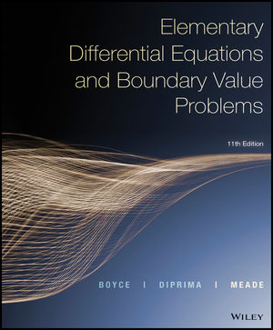

● ملخصات:
ملخص كالكولاس 1
● شروحات:
- شرح د.كامل فليفل
● كتب:
1- Calculus 10th Edition anton
2- Thomas' Calculus — George B. Thomas
3- Calculus: Early Transcendentals — James Stewart

● ملخصات:
دفتر عبادة الأخرس
ملخص الاتحاد
ملخص فيزياء 101
● شروحات:
- شرح زايد البشتاوي
- شرح Afkar Academy
- شرح د.أحمد عوض
● كتب:
1- Physics for Scientists & Engineers & Modern Physics, 9th Ed
2- Fundamentals of Physics — Halliday, Resnick & Walker
3- University Physics with Modern Physics — Young & Freedman

● ملخصات:
ملخص الاتحاد
● شروحات:
- شرح حمزة ناهض
● كتب:
1- General Chemistry: The Essential Concepts
2- Chemistry: The Central Science — Brown, LeMay
3- General chemistry : principles and structure Brady

● ملخصات:
د.محمد فؤاد
د.محمد مأمون
د.غالب
● شروحات:
- شرح د.محمد فؤاد
● كتب:
1- Applied Statistics and Probability for Engineers, 7th Edition
2- Introduction to Probability and Statistics — William Mendenhall

● ملخصات:
ملخص معادلات تفاضلية
● شروحات:
- شرح د.عبداللطيف يوسف
- شرح د.غالب جمعة
● كتب:
1- Elementary Differential Equations and Boundary Value Problems
2- Differential Equations with Boundary-Value Problems — Dennis G. Zill
3- Differential Equations and Linear Algebra — Stephen W. Goode & Scott A. Annin
